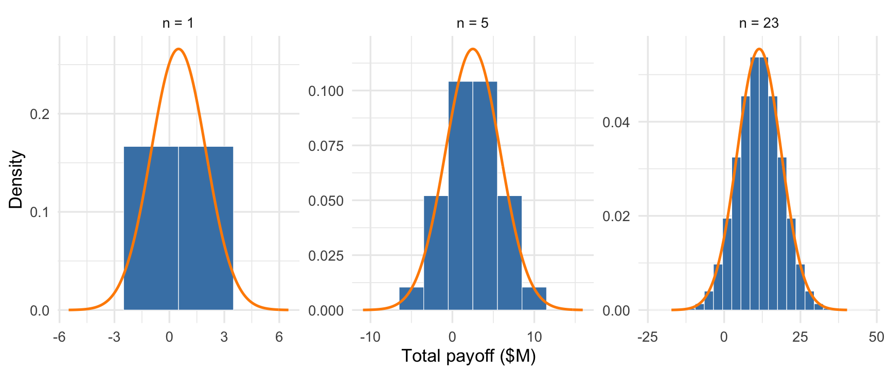
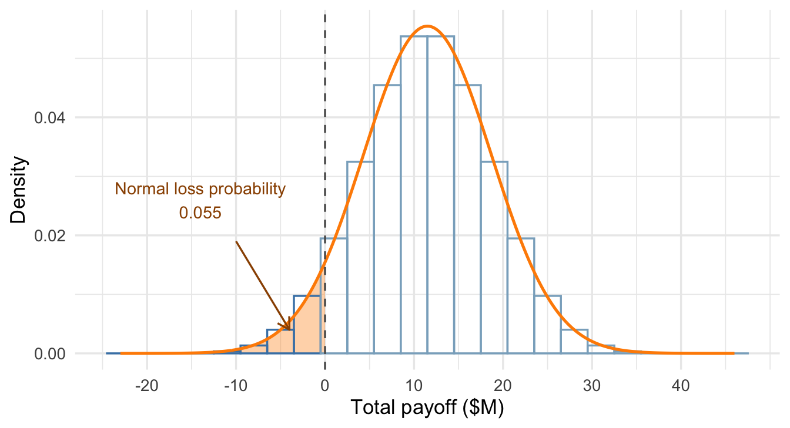

15 Sums, Averages, and the Central Limit Theorem
All the rules from the last chapter about combining two random variables have analogues for settings where we combine multiple random variables: portfolios that hold many assets, forecasted total revenues added up from many branches. The math involved gets unwieldy, however — we end up with long formulas involving all the possible covariances between the random variables. (The rules work similarly to paired variables: positive covariances increase variability relative to independence and negative covariances decrease it.) In one very special case — when the random variables are independent — there are simple rules for computing their means, variances, and standard deviations. By repeatedly applying the rules in that chapter we can show that means/expected values add (this is always true, irrespective of dependence between the random variables) and that variances add (this is the special rule that requires independence).
Example 15.1: Thaler’s investment decision
In Misbehaving, Richard Thaler recounts a meeting with a CEO and the 23 executives who ran the company’s divisions. He offered each executive a hypothetical project that would earn $2 million with probability 0.5 or lose $1 million with probability 0.5. Only three executives would take it, but the CEO wanted all 23 projects if their outcomes were independent. Why might an individual executive decline while the CEO wanted them all to accept? Was the CEO making a sensible business decision?
15.1 Sums and averages
Suppose we repeat the same random process independently: each project faces the same payoff distribution, or each customer order faces the same distribution of processing times. We call the resulting random variables independent and identically distributed, abbreviated iid.
Definition 15.1: Independent and identically distributed random variables
Random variables \(X_1,\ldots,X_n\) are independent and identically distributed (iid) when they are independent of one another and all have the same distribution.
Having the same mean and variance alone does not make distributions identical; their probabilities and shapes must also agree. For the sums and averages below, suppose the common distribution has a finite mean \(\mu\) and finite variance \(\sigma^2\).
NoteSums and averages of iid random variables
The sum \(S_n=X_1+X_2+\cdots+X_n\) has
\[ E[S_n]=n\mu,\qquad \operatorname{Var}(S_n)=n\sigma^2,\qquad \operatorname{SD}(S_n)=\sqrt{n}\,\sigma. \]
The average \(\bar X=S_n/n\) has
\[ E[\bar X]=\mu,\qquad \operatorname{Var}(\bar X)=\frac{\sigma^2}{n},\qquad \operatorname{SD}(\bar X)=\frac{\sigma}{\sqrt n}. \]
The sum’s mean grows in proportion to the number of terms, while its standard deviation grows with the square root of that number. The average keeps the original mean and has a smaller standard deviation.
Means add whether or not the variables are independent. Independence removes the covariance terms from the variance of the sum, leaving \(n\) copies of \(\sigma^2\). Dividing the sum by \(n\) divides its variance by \(n^2\), giving \(n\sigma^2/n^2=\sigma^2/n\) for the average.
Focus on the sum for a moment, which is the relevant metric for Thaler’s example: The total expected payout increases with more projects. So does the standard deviation — the relevant spread metric, since it’s also in million-dollar units — except it increases much more slowly, as the square root of \(n\). This difference is what makes the risk calculation so different between individual division heads and the CEO, as we’ll see below.
Let \(X\) be one of Thaler’s project payoffs in millions of dollars. Its mean and variance are
\[ E[X]=0.5(2)+0.5(-1)=0.5, \]
\[ \operatorname{Var}(X)=0.5(2-0.5)^2+0.5(-1-0.5)^2=2.25. \]
The expected profit is $500,000, and the standard deviation is $1.5 million. A positive expected payoff does not remove the downside: an executive taking one project still faces a probability of 0.5 of losing $1 million. An executive judged on their own division’s results might reasonably be unwilling to risk that loss.
The CEO is considering the combined outcome of all 23 projects. Under the independence assumption, the total payoff \(S_{23} = X_1+X_2+\cdots+X_{23}\) has
\[ E[S_{23}]=23(0.5)=11.5,\qquad \operatorname{Var}(S_{23})=23(2.25)=51.75, \]
so its standard deviation is \(\sqrt{51.75}\approx7.19\) million dollars. Expected total profit grows by a factor of 23, while its standard deviation grows by only \(\sqrt{23}\). The company takes on more total uncertainty, but less uncertainty relative to its expected profit.
The average payoff per project still has mean $0.5 million. Its standard deviation is
\[ \operatorname{SD}(\bar X)=\frac{1.5}{\sqrt{23}}\approx0.31 \]
million dollars, compared with $1.5 million for a single project. This reduction helps explain the CEO’s willingness to accept the bundle. It does not establish that accepting every project is optimal for every firm; that decision also depends on the firm’s ability to absorb losses and the uses of its capital.
What is the probability that the 23 projects lose money in total? Their mean and standard deviation alone do not determine that probability. We need the distribution of the total, which we approximate in the next section.
Exercise 15.1: Daily service fees
A repair company models the fees for 25 service visits as iid, with mean $160 and standard deviation $40 per visit. Find the mean and standard deviation of the day’s total fees and its average fee per visit.
Solution
The total has mean \(25(160)=4{,}000\) dollars and standard deviation \(\sqrt{25}(40)=200\) dollars. Across repeated days, total fees vary around $4,000 with a standard deviation of $200.
The average has mean $160 and standard deviation \(40/\sqrt{25}=8\) dollars. Across repeated days, the average fee per visit varies around $160 with a standard deviation of $8.
Exercise 15.2: Sales on a rainy day
A company uses an iid model for daily sales at its 16 outdoor kiosks, each with mean $500 and standard deviation $100. All kiosks are in the same city, and rainy days tend to reduce sales at all of them. If the individual means and standard deviations remain correct, explain which of the model’s results for total sales would still hold: a mean of $8,000 or a standard deviation of $400.
Solution
The mean of $8,000 still holds because means add even under dependence. Shared weather makes kiosk sales tend to move together, so the total’s standard deviation would be larger than $400. We need information about the dependence to calculate how much larger.
15.2 The Central Limit Theorem
Figure 15.1 shows the distributions of total payoff for 1, 5, and 23 independent projects. The orange curves are normal distributions with the same means and variances as the totals.
An individual project’s payoff is far from normal: it has only two possible values. Add five independent projects and the total starts to take a bell shape. Add 23 and a normal curve describes the shape of the distribution fairly well. The individual projects still have the same two possible payoffs; it is their total that has become approximately normal. This webapp simulates portfolios and accumulates the results into a histogram to verify the calculation.
The Central Limit Theorem (CLT) says that this happens quite generally when we add many independent draws from the same distribution. The individual variables do not need to be normally distributed.
NoteThe central limit theorem
For iid random variables with mean \(\mu\) and finite, positive variance \(\sigma^2\), the sum and average have approximately normal distributions when \(n\) is sufficiently large:
\[ S_n\ \approx\ N(n\mu,n\sigma^2),\qquad \bar X\ \approx\ N\left(\mu,\frac{\sigma^2}{n}\right). \]
The second parameter in \(N(\text{mean},\text{variance})\) is the variance. The means and variances come from the rules for sums and averages; the CLT adds the approximately normal shape.
The average is the total divided by \(n\), so it has the same distributional shape on a different scale. For the 23 projects, the average payoff is approximately normal with mean 0.5 and standard deviation about 0.31 million dollars.
We can now approximate the probability of a loss. The total payoff has mean 11.5 and variance 51.75, giving
\[ S_{23}\ \approx\ N(11.5,51.75). \]
A total of zero lies about 1.60 standard deviations below the mean, so the probability we lose money is rather small — 0.055 under this approximation. In Figure 15.2, the shaded normal area to the left of zero represents this approximate probability.

Technical detail 15.1: Computing the loss probability exactly
Since the projects are independent and the success probability is 0.5, each possible sequence of successes and failures is equally likely. We can compute the probability of a particular total payoff by counting the sequences that produce it and dividing by the total number of sequences.
In Paths to a Payoff, set \(n=4\) and keep the payoff at +$2M / −$1M. Click “Next sequence” to follow one sequence of project outcomes, then click the +$2M total or its bar in the lower plot. Six of the 16 possible sequences reach this total: each has two successes and two failures, in a different order. Its probability is therefore \(6/16=0.375\).
With 23 projects, there are \(2^{23}=\) 8,388,608 equally likely sequences. We lose money if fewer than eight projects succeed: seven successes and 16 failures give \(7(2)-16=-2\) million dollars, while eight successes and 15 failures give \(8(2)-15=1\) million. Counting the sequences with zero through seven successes gives 390,656 losing sequences. Dividing by \(2^{23}\) gives an exact loss probability of about 0.0466, compared with 0.055 from the normal approximation.
There is a shortcut if you know one more probability distribution. The binomial distribution is a discrete distribution that does this counting for us. A random variable has a binomial distribution with \(n\) trials and success probability \(p\) when it counts the successes in \(n\) independent trials, each with success probability \(p\). Equivalently, it is the sum of \(n\) independent binary variables that equal 1 on success and 0 on failure.
Here the number of successful projects has a binomial distribution with \(n=23\) and \(p=0.5\). Its cumulative distribution function at seven gives the probability of seven or fewer successes, which is the exact loss probability computed above.
WarningIndependence matters
Independence is a critical assumption here. If all divisions’ projects succeed or fail together, the total payoff is either $46 million or −$23 million, each with probability 0.5. Its loss probability remains 0.5, and averaging does not reduce the standard deviation of the payoff per project. If common factors make all the projects simultaneously more or less likely to succeed, we observe a similar effect, just less extreme.
NoteHow large must n be?
The number of terms needed for a good normal approximation depends on the original distribution. Strong skew or rare extreme outcomes can require many more terms than a symmetric distribution like the project payoff. While you may read \(n=30\) as a common convention or rule of thumb, there is no single cutoff that works for every distribution.
15.3 Practice
Exercise 15.3: Order processing times
A fulfillment center models processing times for individual orders as iid, with mean 12 minutes and standard deviation 6 minutes. The distribution is right-skewed.
- Find the mean and standard deviation of the total processing time for 100 orders.
- Find the mean and standard deviation of the average processing time for those orders. How many orders would reduce the average’s standard deviation to 0.3 minutes?
- If a normal approximation is adequate for this model, approximate the probability that the total exceeds 1,320 minutes. Express the same event using the average processing time.
- Suppose a common equipment slowdown affects all 100 orders. Explain why the iid calculation may understate the variability of their total.
Solution
The total has mean \(100(12)=1{,}200\) minutes and standard deviation \(\sqrt{100}(6)=60\) minutes. The average has mean 12 minutes and standard deviation \(6/\sqrt{100}=0.6\) minutes. Reducing that standard deviation to 0.3 requires 400 orders.
The threshold 1,320 is two standard deviations above the total’s mean, giving an approximate probability \(\Pr(Z>2)\approx0.0228\). The same event is an average above 13.2 minutes, also two standard deviations above its mean.
A shared slowdown can make processing times move together, producing positive covariance terms. Adding only the individual variances omits those terms and can understate total variability.
Exercise 15.4: Rare warranty payouts
A warranty model assigns each policy a payout of $1,000 with probability 0.001 and zero otherwise, independently across policies. For 100 policies, the probability that every payout is zero is about 0.905. An analyst says, “With 100 policies, the central limit theorem makes both individual payouts and the average payout approximately normal.” Assess this claim using the stated model.
Solution
An individual payout still takes only the values zero and $1,000; adding policies does not change its distribution. The central limit theorem concerns the shape of sums and averages as the number of iid draws grows.
Here even the average is zero with probability about 0.905, with occasional positive values. A normal distribution would not describe that shape well. Although the model satisfies the theorem’s assumptions, 100 policies are not enough for a good normal approximation in this rare-payout model.